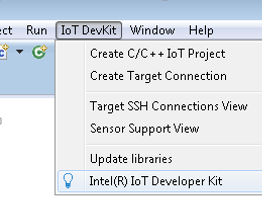
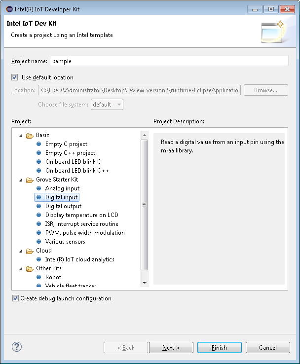
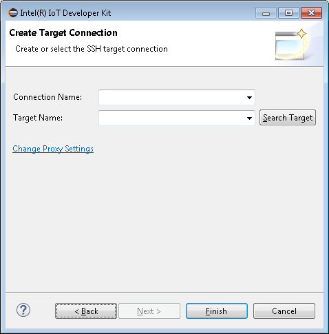
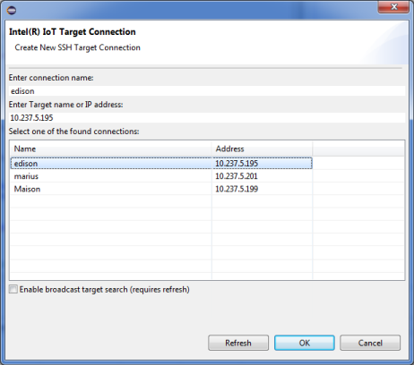
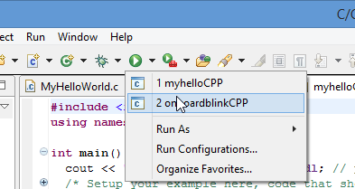
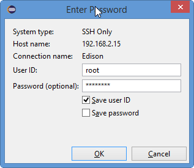
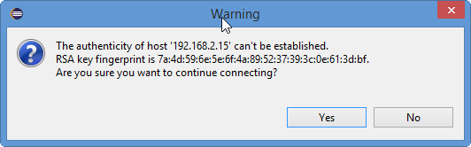

Set Up Intel® IoT Dev Kit Eclipse - Run a Sample Project
This document will guide you through creating and running a Hello Word project (blinking the onboard LED) on the Intel® Edison.
-
Select IoT DevKit > Create C/C++ IoT Project.

-
Type a name for your project in the Project name field.

- From the Project list, select On board LED blink C++. Click Next. The SSH Connection page displays.
-
To search for connections and select your board from a list, click Search Target. The Create Target Connection page opens.

- By default, Eclipse searches for boards available via the Bonjour service and displays them in a list. If your board is not displayed in the list, select the Enable broadcast target search check box to widen your search to all devices on your network.
-
From the list, select your board and click OK.

Note: If you already know your board’s connection information, you can type it manually. Do the following:
* In the Connection Name field, type a name to use for the connection to your board.
* In the Target Name field, type the IP address or host name of your board. - Click Finish. Your project is created.
-
From the Run drop-down list in the toolbar, select the name of your project.

-
In the User ID field, type the user name to log in to your board.
-
In the Password field, type the password for your board.

-
If a warning message about host authenticity displays, click Yes to upload and run your project.

-
Once your project runs, you’ll see an LED blinking on your board, as shown below.
-
Check your Intel® Edison for a blinking light. The LED is located near the center of the board.

Congratulations, you just ran your first C++ application!
Having issues? Refer to Troubleshooting »
You should now be able to successfully program the Intel® Edison and the onboard LED should be blinking.